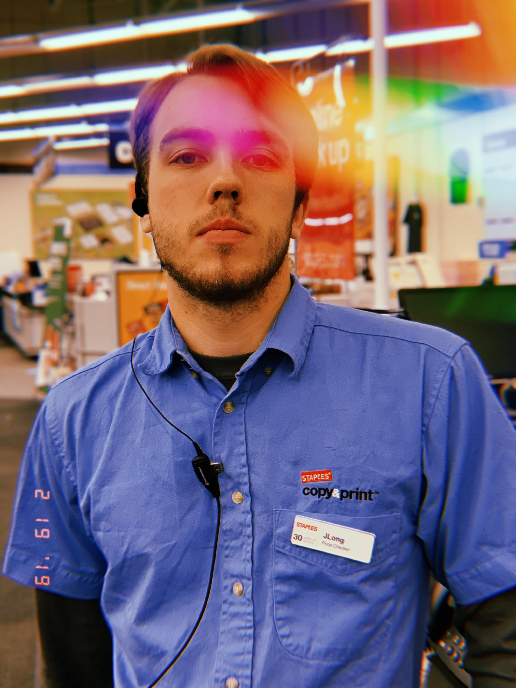

ABOUT.
A Chicago based creator, Jake is currently pursuing a Bachelors Degree in Audio Music Production at Illinois State University. While also dabbling in visual art his true passion is in music and sound design. Jake also streams on Twitch from time to time. Having many passions Jake is currently working on a series about how it is to learn and live with different learning disabilities. His end goal is to create a series of imersive audioscapes that make you feel like you're in a different place. This would be a more affordable way for people to experience the world if they cannot be there in person for one reason or another.